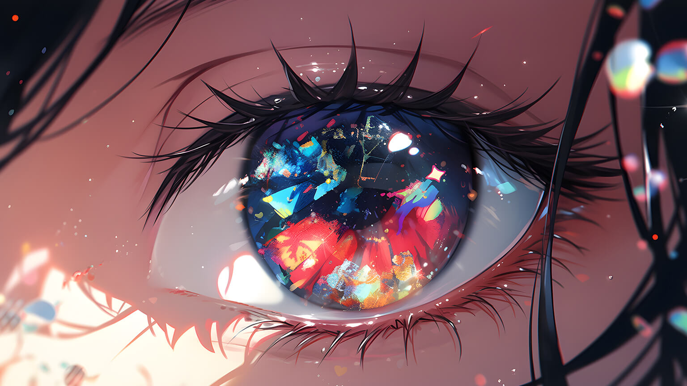

❮
❯


Halo! Nama saya nopalambali_. Saya adalah seorang yang memiliki ketertarikan besar pada teknologi, pendidikan, dan pengembangan diri. Bagi saya, belajar adalah perjalanan seumur hidup, dan membagikan apa yang saya pelajari adalah salah satu cara saya tumbuh bersama orang lain.
Moto saya: "Belajar bukan untuk menjadi yang terbaik, tapi untuk terus bertumbuh." üå± View Resume.